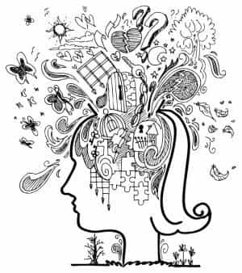
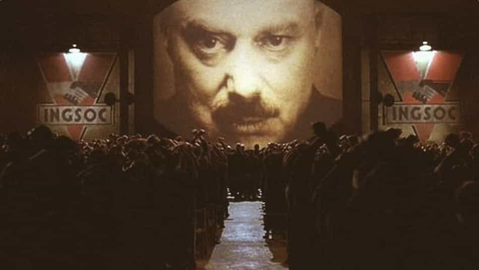
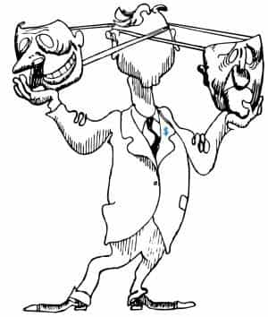

John Kyrios is a ruthless patriarch that enjoys criticizing liberal culture and all its abhorrent byproducts. Stalk him on Twitter.


Traditionalism, the absurd notion that society isn’t a meta-individualistic nucleus for the propagation of anomie, is quite upsetting and inversive to the globalist order.
Is it possible that we, as people, have a historicity that transcends material dialectics? Is it possible that our cultural heritage, despite all its ignominious shortcomings, is not a badge of shame but rather an unlimited source of pride and power? Is our lurid folklore, as a communication of our past, not a celebration of who we truly are?
In the last few decades, traditionalism is perceived as a form of atavistic collectivism, an idealism that’s embarrassingly superannuated to anyone capable of criticism and cultural sensibility. Tradition is equated with bloodshed; it is seen as the foundation stones to militarism, or as an antiquated concept that endangers civil peace whenever it serves as a device for patriotic rhetoric.
Whilst traditionalism, when radicalized to the extreme, is undeniably a destructive force, destruction is far from being the totalized, utmost definition of traditionalism.
Traditionalism, at the rare times of rational societal functioning, is a moral essence that unifies people around the communion of ritualized identity; it promotes the preservation of a legitimate self-knowledge that goes beyond egotism and subjectified precepts. Therefore, purveying clarity and spiritual strength, traditionalism is antagonizing to the postmodern left. The left, debased in ambiguity and the ironies of empty-minded sophistry, cannot tolerate brotherly love unless it’s homophilic or incestuous.
Traditionalist values, in that they yield stability and foster a sense of commitment and obligation, go against the left’s transfixedly chaotic irresolution, as manifested through the left’s cowardly position of non-involvement and its lack of wholesome alternatives. In this brief essay, we’ll examine two of the ways the left undermines traditionalism.

Language, as we well know, is the power to transform ideation, remold normative behaviors, and erect and uproot civilizations. Academic and learned language, being the paragon most thinkers (that is, most ideologic dominators and worldbuilders) aspire to, is responsible for more damage than we can account for.
Certainly, speaking in realistic terms, the average factory machinist, who grinds rust all day long, too exhausted and too exploited to have time for intellectual leisure, cares little for Naomi Klein or Judith Butler (and rightly so; if anything, he should dwell on Heraclitus and Parmenides). But he is, nonetheless, affected by feminist discourse.
If, for instance, he looks wrong at a female co-worker, he can be accused of sexual harassment and lose his job. If he says something out-of-place to that same female co-worker, he can be accused of sexual harassment and lose his job.
If that same machinist has an affair with a woman and he decides to discontinue their romantic affiliation, to dump the bitch, that woman can extort him with shaming (or a false rape accusation) and everyone will side with her because the victim is always right.
Feminism, that despicable cargo cult of necrophagic vampires, however, isn’t the academy’s worst criminal offense against society. Far worse is the nullification, encryption and subversion of language itself.
The left, with its monopoly over the media and our educational institutions, when not overtaken with the surplus obfuscation of dialogue, is trying to create a language of equality and mediocrity. The problem is, we don’t need such a language.

If we are to progress anywhere, we need explicitness, and we need conflict, debate, digressions. Writing should aim towards greatness, and great writing brings about enlightenment and aggrandizement, not reductionism and confused abjection. Great writing should help men make sense of the world; it should inspire them to seek answers and better themselves.
Understanding this simple reality, the left made it its purpose to restandardize literature and philosophy and divest the disciplines of their high aesthetic principles. The result? People genuinely think The Stranger is a profound and well-written novel.
News flash: it isn’t.
To compare Camus and Sartre with Montaigne and Molière, is to compare a pile of dung with one of Rodin’s sculptures. What sets these authors apart, other than diachrony, political orientation, mere talent and intellect, is the presence of traditionalism.
Although they were dissenting insurrectionists, as writers ought to be, both Montaigne and Molière had a more traditional, rigorous instruction—no single-sex education, sociology or communications!—and both were tied to traditionalist authority for their whole entire life. Montaigne was a statesman, Molière was Louis XIV’s protégé.
Camus is best-described by Nabokov (who knew a thing or two about books): “Second-rate, ephemeral, puffed-up. A nonentity, means absolutely nothing to me. Awful.” In degrading literature to colloquialism and banalities, making it an all-populist profession open to every underqualified, borderline hypochondriac, the left had hurt the world’s language and thus culture’s capacity for critical thought.
The less words we express ourselves in, the less free-thinking we are. The more equality there is in language, the more it signifies nothing.
Asymbolia, according to dictionary.com, is,
1. A loss of the ability to comprehend by touch the form and nature of an object.
2. A form of aphasia in which the significance of signs cannot be comprehended.
Asymbolia, make no mistake, is the state we are in thanks to the left. Objectivity’s obsolete and long gone is the scholarly code of conducting thorough, comprehensive investigations into the nature of things. Epistemologically, more than ever before, our hermeneutics are excised and cut separate from fact and nature. Instead, we have Marxist newspeak and cryptography for history.
Likewise, asymbolia is a correlative of anti-symbolism. The left, with its adversity towards status symbols and with its fear of nationalism and religion, is making us signifier-illiterate; it denies the basic human need for allegory and myth (just like Camus and Sartre’s existentialism undoes heroization).
No longer are we permitted to relish the beauty of our emblems. Instead, we wear t-shirts with corporate logos to convey wry self-awareness. De Sade’s invaluable manuscripts burnt so we can have 50 Shades of Gray. Tragic.

When we aren’t equipped with the analytical tools to define the surrounding world, it shouldn’t come as a surprise we are estranged from ourselves. Identity is the backbone of character and integrity. Consequently, identity loss or de-identification—the dispossession of identity—is a symptom of social disintegration.
The left, in pardoning everything save for whatever hallucinated ills its marginalized ingroups endure, is anti-identity. Its devalued currency of selfhood and respect, alongside the naive ideas of liquidity, disenfranchisement and universalized pluralism, reeks of de-individualization.
The death of identity, assailing man’s security and amplified by the anonymizing influence of urbanization (not to go all Entfremdung), is one of the main struggles we face as modern humans.
Take me, your humble abstractor, for example. I’m a White, European, Eastern Orthodox male, but in a free-choice era of trans-ethnicity and transsexualism, I can declare myself an Egyptognostic hermaphrodite of Hawaiian/Austroasiatic ancestry and expect you to take me most seriously. What more, you should change the way you speak and adopt gender-neutral pronouns to accommodate my oversensitiveness. And dare you not appropriate my new culture.
(The fact I can do this and not get ridiculed to exile or quarantined in a psych ward is alarming.)
The battle against anti-traditionalism is a difficult one because it’s turning more and more into a battle against ourselves. To win it, we must know ourselves and our history. We must defend what is ours with dignity and an indefatigable resolve.
 If you like this article and are concerned about the future of the Western world, check out Roosh's book Free Speech Isn't Free. It gives an inside look to how the globalist establishment is attempting to marginalize masculine men with a leftist agenda that promotes censorship, feminism, and sterility. It also shares key knowledge and tools that you can use to defend yourself against social justice attacks. Click here to learn more about the book. Your support will help maintain our operation.
If you like this article and are concerned about the future of the Western world, check out Roosh's book Free Speech Isn't Free. It gives an inside look to how the globalist establishment is attempting to marginalize masculine men with a leftist agenda that promotes censorship, feminism, and sterility. It also shares key knowledge and tools that you can use to defend yourself against social justice attacks. Click here to learn more about the book. Your support will help maintain our operation.
Read More: How To Kill The Left’s Killswitch Lexicon